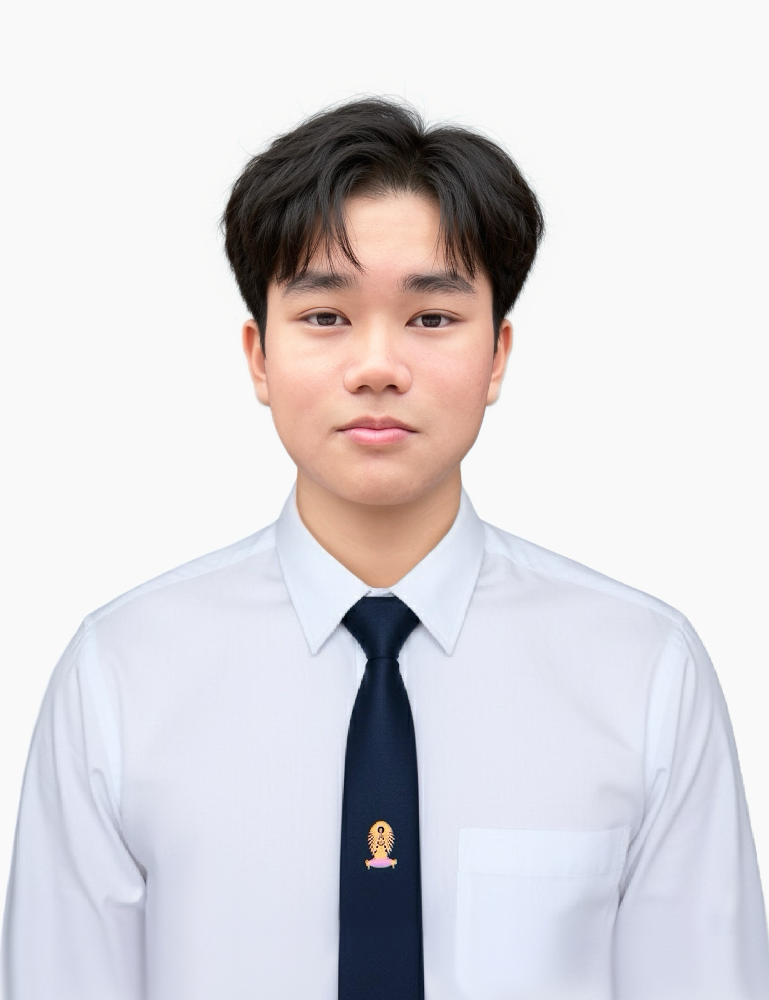

นิสิตวิศวกรรมคอมพิวเตอร์และเทคโนโลยีย์ดิจิทัล (CEDT) จุฬาลงกรณ์มหาวิทยาลัย มุ่งมั่นศึกษาและพัฒนาซอฟต์แวร์ ระบบปัญญาประดิษฐ์ (AI) และวิศวกรรม IoT มีประสบการณ์การนำทีมพัฒนาโปรเจกต์ นวัตกรรม และ Machine Learning
ผลงานออกแบบและพัฒนาซอฟต์แวร์ที่โดดเด่น
ระบบจำลองเหตุการณ์ฉุกเฉินและประเมินพฤติกรรมการตัดสินใจของผู้ขับขี่แบบเรียลไทม์ ใช้ Computer Vision วิเคราะห์ความเสี่ยง พร้อมเชื่อมต่ออุปกรณ์จำลองการขับขี่เพื่อวัดอัตราการตอบสนองตามกฎจราจร
ผลงาน Hackathon, หุ่นยนต์ และการทดสอบมาตรฐานวิชาชีพ
พัฒนาหุ่นยนต์เคลื่อนที่อัตโนมัติด้วย micro-ROS บน Microcontroller เชื่อมต่อสื่อสารกับ ROS 2 Node เพื่อประมวลผล Sensor Data และสั่งการแบบ Real-Time
พัฒนาโมเดล Predictive Machine Learning (Random Forest) เพื่อพยากรณ์การแพร่ระบาดตามปัจจัยฤดูกาลและพื้นที่
พัฒนานวัตกรรมลดอุบัติเหตุบนท้องถนนผ่านเทคโนโลยี Virtual Reality Interactive Simulation
ออกแบบระบบ Contactless Payment และประยุกต์ใช้ CSRNet AI Model ตรวจสอบความหนาแน่นผู้โดยสาร
ออกแบบหุ่นยนต์เก็บขยะระบบไฮดรอลิก เขียนโปรแกรมควบคุม Servo Motor และจัดการพลังงาน
ออกแบบ UI/UX และพัฒนา Frontend เว็บแอปพลิเคชันแนะนำข้อมูลการศึกษาและวัฒนธรรม
ผ่านการสอบวัดระดับมาตรฐานความรู้ด้าน Machine Learning, Model Training และ Mathematics for Engineering (77/100)
บทบาทการเป็นผู้นำ และงานบริการวิชาการ
ผู้ช่วยสอนอบรมเชิงปฏิบัติการ ให้คำแนะนำการเขียนโปรแกรมควบคุม Arduino, Micro:bit, Unity และการใช้งาน AI
วางแผนและบริหารจัดการทีม นำกิจกรรม Ice Breaking และดูแลการทำงานร่วมกันในองค์กรและค่ายเทคโนโลยี
ออกแบบและตัดต่อสื่อมัลติมีเดีย งานวิดีโอคอนเทนต์ด้วย Adobe Premiere Pro และ Final Cut Pro